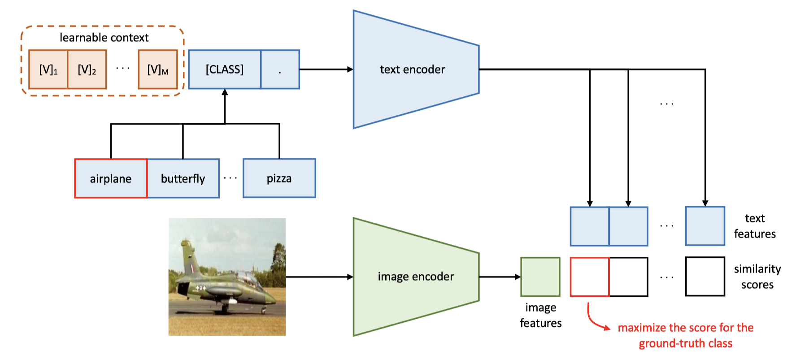

Assignment 1 / Multimodal / Methodology
Config-Driven Pipeline WandB LoggedThe experiment is a reproducible sequence, not a notebook-only artifact.
The multimodal workflow is defined through a single YAML config, split into explicit stages for download, preprocessing, embedding extraction, training, inference, and evaluation. This keeps the pipeline auditable and lets the final HTML report mirror the exact artifacts produced by the training run.
Process graph
1. download.py
-> export Food101 images + labels to disk
2. preprocess.py
-> filter to 10 selected classes
-> write train_full.csv and test.csv
-> create fewshot_{8,16,32,64,128}/{train,val}.csv
3. extract_embedding.py
-> extract CLIP image embeddings for train_full and test
-> extract 5 prompt embeddings per class
-> average 5 prompt embeddings into one class prototype
4. train.py
-> zero-shot evaluation
-> CoOp training per shot setting
-> linear probe training per shot setting
5. infer.py
-> load zero-shot, linear probe, or CoOp
6. evaluate.py
-> build summary.csv, confusion matrices, failure analysis, saliency mapsWhat the YAML controls
| Config block | Purpose |
|---|---|
| `model` | CLIP model id, currently `openai/clip-vit-base-patch32`. |
| `dataset` | Hugging Face dataset id and the 10 selected Food101 classes. |
| `prompts` | Five zero-shot templates, averaged per class. |
| `few_shot` | Support budgets: 8, 16, 32, 64, 128 shots per class. |
| `splits` | Validation-per-class budget and deterministic seed. |
| `training` | Linear-probe optimizer settings. |
| `coop` | Number of context tokens, class-token placement, class-specific context toggle, and prompt-optimizer settings. |
| `wandb` | Tracking mode, project, entity, and tags. |
Training strategy by head
- Zero-shot uses no task-specific weight updates and relies only on CLIP similarity between image embeddings and averaged class prompt embeddings.
- CoOp freezes CLIP and learns only the prompt context vectors, which keeps adaptation parameter-efficient.
- The linear probe uses the same frozen image features but learns a linear classification head from support images only.
- Each few-shot setting shares the same held-out test set, so improvements are directly comparable across support budgets.

Linear probe and CoOp are both lightweight adapters
Neither learned method fine-tunes CLIP itself. The image encoder, text encoder, and projection layers stay frozen. The only trainable difference is whether adaptation happens in a small classifier on the image side or in a bank of learnable prompt vectors on the text side.
| Method | Trainable component | Shape | Trainable params | Notes |
|---|---|---|---|---|
| Zero-shot | None | 0 | 0 | Uses averaged prompt embeddings and CLIP similarity only. |
| Linear probe | Classifier weight + bias | 512 x 10 + 10 | 5,130 | A single linear layer on top of the 512-d normalized CLIP image embedding. |
| CoOp | Shared context tokens | 16 x 512 | 8,192 | Sixteen learnable prompt vectors because `class_specific_context: false` in the current config. |
Why prompt learning changes the few-shot regime
CoOp replaces the fixed hand-written prompt bank with learnable context tokens that are optimized against the few-shot support set while the CLIP backbone stays frozen. This keeps adaptation lightweight but lets the text side bend toward the current task.

Zero-shot, linear probe, and CoOp implementations in src/
# assignments/assignment1/multimodal/src/extract_embedding.py
def build_text_embeddings(model, processor, class_names, prompt_templates, device):
...
prompt_embeddings = text_features / text_features.norm(dim=-1, keepdim=True)
pooled_embedding = prompt_embeddings.mean(dim=0)
pooled_embedding = pooled_embedding / pooled_embedding.norm()
class_embeddings.append(pooled_embedding.cpu())# assignments/assignment1/multimodal/src/train.py
def train_linear_probe(train_embeddings, train_labels, val_embeddings, val_labels, ...):
classifier = nn.Linear(train_embeddings.shape[1], num_classes).to(device)
optimizer = torch.optim.AdamW(classifier.parameters(), lr=learning_rate, weight_decay=weight_decay)
criterion = nn.CrossEntropyLoss()
...
logits = classifier(batch_embeddings)
loss = criterion(logits, batch_labels)| Architecture | Forward rule | Effective size in this pipeline |
|---|---|---|
| Zero-shot | image_embed @ avg_prompt_embed.T |
No task-specific trainable parameters. |
| Linear probe | Linear(512 -> 10) |
5,130 trainable parameters. |
| CoOp | 16 learnable prompt vectors -> frozen CLIP text encoder |
8,192 trainable parameters with shared context. |
# assignments/assignment1/multimodal/src/train.py
class CoOpPromptLearner(nn.Module):
def __init__(..., num_context_tokens, class_token_position, class_specific_context, ...):
self.token_embedding = clip_model.text_model.embeddings.token_embedding
context_vectors = self._initialize_context(...)
if class_specific_context:
context_vectors = context_vectors.unsqueeze(0).repeat(self.num_classes, 1, 1)
self.context = nn.Parameter(context_vectors)
def train_coop(train_embeddings, train_labels, val_embeddings, val_labels, class_names, model_id, coop_config, device):
clip_model = CLIPModel.from_pretrained(model_id).to(device)
for parameter in clip_model.parameters():
parameter.requires_grad = False
prompt_learner = CoOpPromptLearner(...)
...
text_features = build_coop_text_features(prompt_learner, clip_model, device=device)
logits = clip_model.logit_scale.exp() * (batch_embeddings @ text_features.T)What training histories show
The 128-shot histories expose two different learning profiles. CoOp drops its training loss quickly and reaches near-saturated validation macro-F1 early, while the linear probe improves more gradually and plateaus lower on validation despite steady training progress.
| Method | Epoch 1 loss | Final epoch loss | Peak val macro-F1 |
|---|---|---|---|
| CoOp (128-shot) | 0.334 | 0.028 | 0.980 |
| Linear probe (128-shot) | 2.266 | 1.010 | 0.970 |